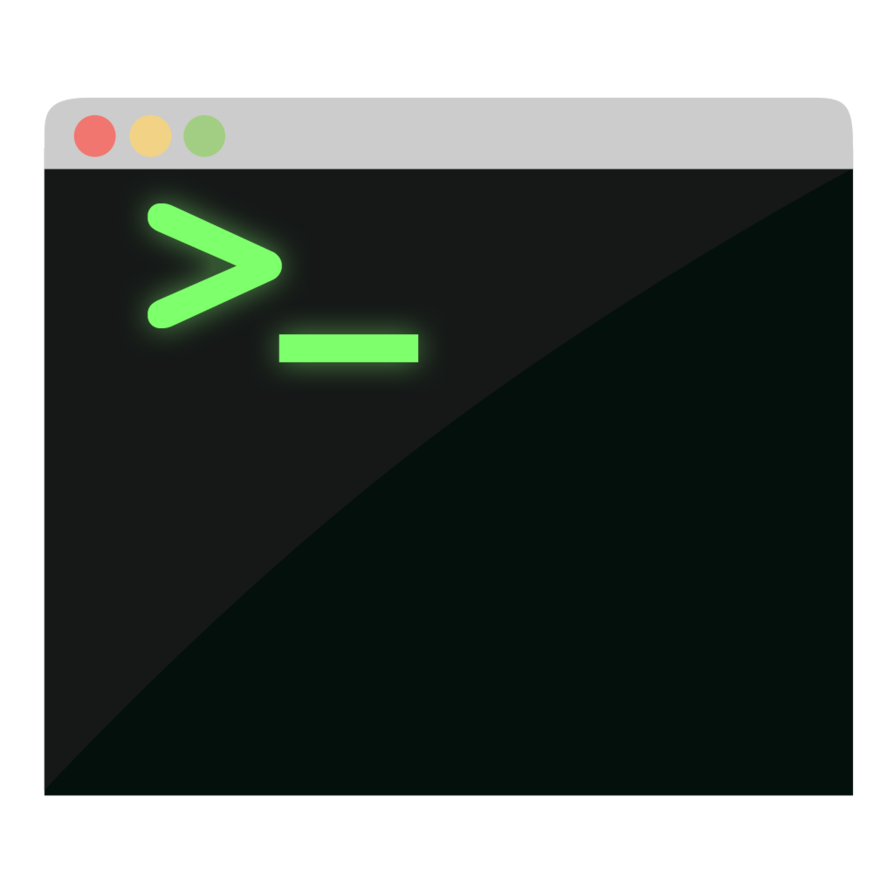

HOT TIP!
Subscript to HTML5 Weekly
http://html5weekly.com/demos, libraries, podcasts, articles
Keep up to date!
Developer Tools
- Browser Tools
- fix your code in the page
- Code Editors
- how do you edit your code?
- Version Control
- take control of your changes
- Javascript Linters
- fix your code style, yo
- HTML Validation
- everyone loves valid html
Browser Tools
- Layout and Style
- Javascript debugging
- Performance tools
- Network Monitoring
- Mobile simulation
- without it you fly blind
- Absolutely essential!
Page Inspector
- View and Modify HTML
- Walk the DOM
- View and change CSS
- Examine Box model
- Look at Fonts
- Ctrl-Shift-C
(Cmd-Option-C on the Mac & Linux)
Web Console
- View warnings and errors
- From javascript
- From CSS
- From network
- Instant REPL
- Special helper commands, like help()
- Control-Shift-K
(Command-Option-K on the Mac)
Javascript Debugger

- Examine Javascript code
- Set breakpoints
- Pause on exceptions
- Pause on events (click)
- Step through code
- Control-Shift-S
(Command-Option-S on the Mac).
Network Monitor
- Inspect all network requests
- images, css/js files, ajax
- Timeline
- how long things take to load
- Edit and resend
- great for debugging server bugs
- Network profiler
- See how site loads with/without cache
Javascript Profiler
- What is javascript doing?
- no idea
- Hot functions
- which get called the most
- Where to optimize
- lowest hanging fruit first
Neato!
- Responsive Design View
- simulate phone screens
- 3D view
- see DOM in 3D!
- Paint Flashing Tool
- what the renderer is doing
Text Editors
- Integrated Development Environments
- Eclispe, Visual Studio, XCode
- write code, debug, deploy
- resource heavy, sometimes buggy
- Light-weight editors
- Sublime Text 2, Notepad++, Atom.io
- balance between features and resource use
- Hardcore
- Vim, Emacs
- Steep learning curve, but highly configurable
Version Control

- Git, Mercurial, Subversion, CVS
- Helps with collaboration
- Branching, merging, roll-back
- Helps with debugging
- bisecting, reverting
- Helps you help yourself
- Use locally to track changes, debug
JS Linting
- Examines your code for mistakes
- syntax errors
- unused/unreachable variable
- accidental globals
- other bad practices
- Finds bugs
- Improves code quality
W3C Validation
- Examines HTML
- finds typos
- unclosed tabs
- illegal structure
- Can fix display issues
- Fixes cross-browser differences
- browsers guess when things are invalid